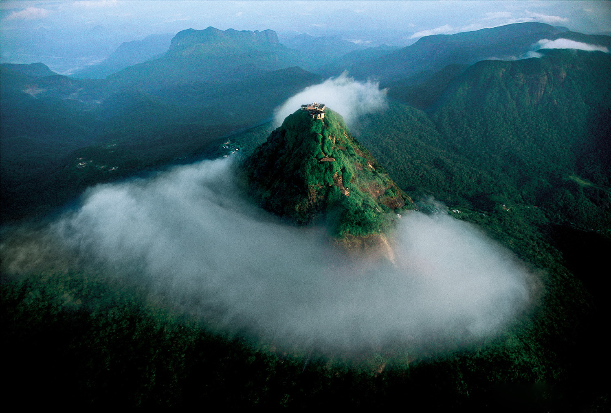

The most sacred mountain in Sri Lanka, offering an incredibly spiritual experience and a breathtaking sunrise from its summit.
Adam's Peak, or Sri Pada, is a 2,243-meter tall mountain that has been a center of pilgrimage for multiple religions for centuries. The summit features a large, sacred footprint, variously claimed by Buddhists to be that of Lord Buddha, by Hindus to be that of Lord Shiva, and by Muslims and Christians to be that of Adam or St. Thomas.
Climbing the mountain is an act of deep spiritual significance, especially the traditional Ratnapura trail which is more rugged and challenging than the Hatton path. Most pilgrims climb at night, seeking to reach the summit by dawn to witness the world-famous shadow cast by the peak and the breathtaking sunrise over the central highlands. It's an experience that transcends religion, offering a profound connection to the island's high-altitude wilderness and timeless faith.
Back to Ratnapura Hub